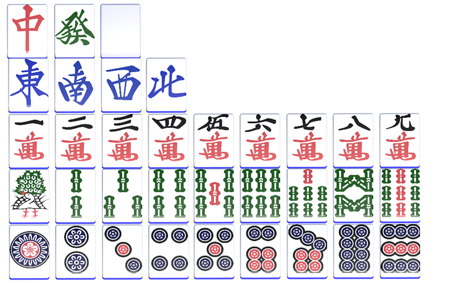
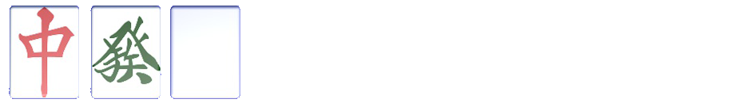
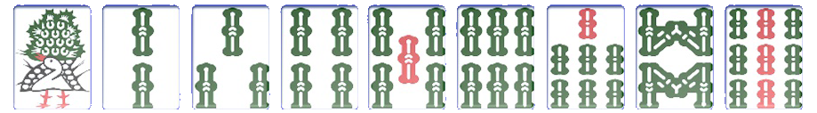
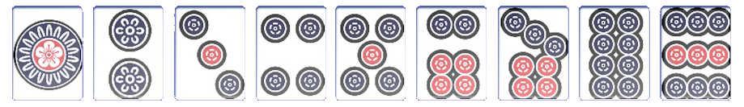
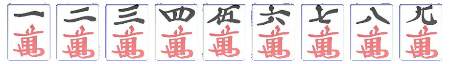

우리는 그 중에서 '리치마작'에 대해서 배울 것이다
왜 리치마작인가??
➀한국에서 가장 하는 사람이 많다.
➁ '리치'라는 것이 중요하다. (이유는 후술)
운과 실력
어떤 것으로든 승부할 수 있는 마작에 세계에 오신 것을 환영합니다
여러분을 가르쳐드릴 저도 전문가가 아닙니다.
하지만! 시작하기 너무 어려운 마작을
조금이라도 쉽게 이해시키기 위해 제작되었습니다.
마작은 왼쪽같은 패를 사용하는 보드게임이다. 중국에서 기원하여 일본 등 동아시아 각지에서 발달된 4인용 보드 게임이다. (다만 한국에선 유명하지 않다.) 중국, 일본 등에서 인기가 많으며 최근엔 한국에서도 하는 사람들이 많아졌다.
리치마작 / 이십이마작 / 국표마작 / 광동마작 / 사천마작 / 대만마작 / 한국마작 등등등...
➀한국에서 가장 하는 사람이 많다.
➁ '리치'라는 것이 중요하다. (이유는 후술)
이런 식으로 몸 4개 머리 하나를 가진 형태로 만들면 된다!
머리는 같은 패 2개로 만들 수 있고
몸은 ⅰ. 4-5-6 처럼 같은 그림의 숫자패 3개가 연속되거나 ⅱ. 5-5-5 처럼 같은 패가 3개 있으면 몸으로 만들어진다.
마작 패는 자패 7개 수패 27개로 이루어져 있고 각 패마다 4개씩 존재하여 총 136개이다.
마우스오버해서 패의 이름을 알아보세요
자패는 한자만 크게 써있거나 아무것도 없는 것이라 외우면 편하다.
삼원패(三元牌): 중 / 발 / 백
풍패(風牌): 동남서북( 마작에선 동서남북이 아니다. )
수패는 1부터 9까지 숫자가 표시된 패이다.
대나무 모양의 '삭'
동그란 모양의 '통'
한자가 있는 '만'

간단 게임 진행 방법
➀ 그림처럼 4명이 동 남 서 북으로 한자리씩 차지하고 각자 13개의 패를 받는다.
➁ 순서는 동-남-서-북으로 진행된다.
➂ 자신의 차례에 ¹작패를 하나 ²패산에서 가져오고 가져온 패와 가지고 있던 패 중에 하나를 자신의 앞에 내려놓는다.
➃ 가져온 패로 정해진 ⁱ역 형태를 완성하면 ³화료하여 승리!
⏣ 용어 설명 ⏣
¹작패: 마작패를 의미
²패산: 패가 쌓여있는 것
³화료: 완료! 역을 만들어 패를 완성했을 때 (=용을 완성했을 때)
오!! 저 용의 형태를 만들었습니다! 저 우승인가요?
아니요! 마작에는 '역'이란게 있습니다. 그걸 맞춰오세요~
예??? 그냥 만들기만 하면 안되나요?
※ 마작에서 용의 형태를 만들 때는 그냥 막 만들면 안된다. 화료(완성)하기 위해서는 정해진 형태가 있고, 그 형태를 맞춰서 완성해야 점수를 얻을 수 있다. 만들기 어려운 형태일 수록 점수가 높다. 그 '형태'가 바로 '역'이다.
예시 역
"탕야오"- 1,9를 제외한 숫자패로만 이루어져야한다.
"일기통관"- 한 종류의 수패를 1부터 9까지 전부 확보한 경우
하지만 방금 만든 패로도 화료할 수 있답니다. 어떻게? ✦리치✦를 사용해서!
리치 역의 조건
:
¹울지 않은 상태에서 ²텐파이에 이르면 점수를 1000점을 낸다. 더 이상 손패를 바꿀 수 없다.
완성까지 1패가 남았을 경우 '리치'를 외칠 수 있다. '리치'를 외친다면 리치의 조건 성립, 내 손에 들어오거나 다른 사람이 버린 패로 화료할 수 있게 된다.
리치를 외치는 이유? 이전 페이지처럼 딱히 역이 없는 형태라도 용을 완성할 수 있게 해준다.
결론: 리치는 용을 완성하는 데 필요한 '역'을 성립하게 해주는 역할
⏣ 용어 설명 ⏣
¹운다?: 다른 사람이 버린 패를 주워 내 손으로 가져오는 것
²텐파이: 화료까지 1패가 남았을 경우
⬤
1.울지 않고 내 손에 들어오는 패들로 머리-몸-몸-몸-몸-몸 (2-3-3-3-3-3)의 형태를 만들어간다.
2. 필요한 패가 1개 남았을 때 '리치'를 외친다.
내가 필요한 패가 내 턴에 손에 들어왔을 땐
-"쯔모!"
다른 사람이 그 패를 버렸을 땐
-"론!"
을 외치며 화료한다.
다른 사람이 버린 걸 가져오게 되면 더 게임이 쉬워질 것 같은데? ->라는 생각은 당연하게 들 것입니다.
앞의 내용을 읽었다면 드는 가장 큰 생각일 것 같습니다! 저도 그랬거든요
우는 것은 자신에게 몸통의 패가 2개가 있을 때 상대방이 나머지 1개의 패를 버리면 그것을 가져오며 몸통을 완성하는 방법입니다. 우는 방법에는 세 가지가 있습니다. 치, 퐁, 깡 (자세한 것은 생략 검색을 통해 알아가기를 바람...)
- 잘못하면 '역없음' 상태가 되기 때문입니다. 마작에는 몇 십개의 '역'이 있고 그걸 다 외워서 형태를 맞춰가는 사람은 고수! 당신은 뉴비! 뉴비가 제일 많이 하는 실수가 역없는 형태를 만들어내는 것입니다. 괜히 어줍짢게 역을 만드려고 하지 말고 '리치'하며 점수도 낭낭하게 챙기고 게임이 어떻게 돌아가는 지 파악도 하고 조패실력도 키워보세요.
+ 리치를 한다고 다른 역을 성립 못하는 것은 아닙니다. 역들은 조합이 가능합니다. 그러면 더 많은 점수를 획득할 수 있습니다. (예시:리치+멘젠쯔모+탕야오 )